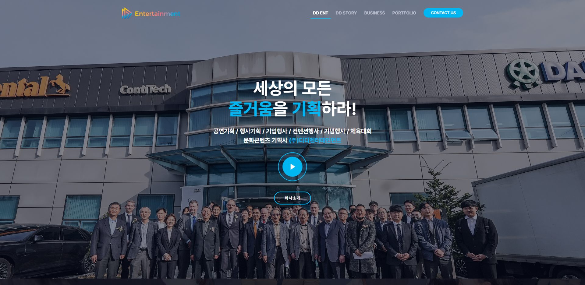

DD entertainment co.,Ltd Web design and Publishing
이벤트와 대형 기업행사, 국내 공공행사를 주로 운영대행하는 주식회사 디디엔터테인먼트입니다.
차분한 듯 생기가 넘치는 미들톤 블루컬러를 제안주셨고, 로고 리디자인을 통해 다양한 색 조합 베리에이션이 가능하여 재미있는 작업이였습니다.
때로는 로고의 메인 브랜드컬러인 블루 투톤을 배경으로 사용하기도 하고,
깔끔하고 차분한 인상을 주고싶은 섹션에는 블루톤이 살짝 가미된 밝은 화이트톤 그레이 컬러를 배경으로 사용해주었습니다.
클라이언트 측의 고민은 브랜드 아이덴티티를 재정비하고 마케팅에 활용하고자 하는 것이였기에,
전체적인 톤앤매너와 디자인가이드를 잡아드렸습니다.